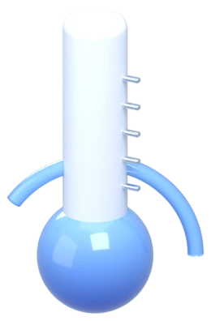
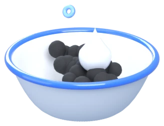

BRIKETASmart Briketisasi IoT
…
Limbah dapur MBGjadi energi bersih
Pantau suhu karbonisasi, pengering, dan adonan briket secara real-time dari ESP32.
—°CSuhu karbonisasi
Sensor
—
Suhu pengering
—°C
DHT22 · AM2302
Kelembapan pengering
—%RH
DHT22 · AM2302

Kelembapan adonan
—%
Sensor kapasitif
ESP32
—dBm
BRK-01
Hari ini
Kapasitas 3–5 kg/hari0%
0 kg limbah diolah
0 kg briket · 0 batch
Lima tahaplimbah → briket
Tahap aktif dibaca dari mesin. Aktuator dapat dikendalikan dari jarak jauh lewat relay 4 kanal.
Aktuator
Relay 4CHPerintah dikirim ke ESP32 melalui Firebase. Tombol fisik di panel tetap jadi prioritas.
Kalkulator perekat
Tapioka 10–20%Tapioka dibutuhkan225 g
Air pelarut (± 1:4)900 ml
Tren suhudan kelembapan
Grafik live untuk menjaga karbonisasi tetap di rentang optimal dan pengeringan tuntas.
Min—
Rata-rata—
Max—
Waktu di rentang optimal
—Catatan batch& mutu SNI
Catat input limbah, perekat, dan hasil uji lab terhadap acuan SNI 01-6235-2000.
Riwayat
0 batchPeringatan dini& tentang alat
Notifikasi muncul saat parameter keluar dari ambang batas yang Anda tentukan.
Belum ada peringatan.
Ambang batas
Spesifikasi prototipe
Tim pelaksana
UNS · Teknik IndustriDosen pembimbing: Dr. Eng. Ir. Pringgo Widyo Laksono, S.T., M.Eng., IPU, ASEAN Eng. · Mitra: SPPG Jebres
SDGs
7Energi bersih
12Produksi bertanggung jawab
17Kemitraan
Bahasa & mode
BRIKETA · Program Hibah Pembelajaran Berdampak UNS 2026